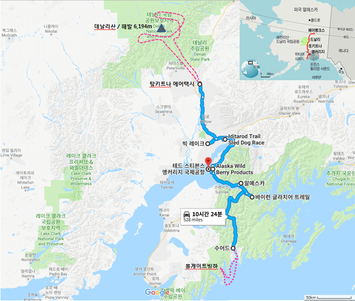
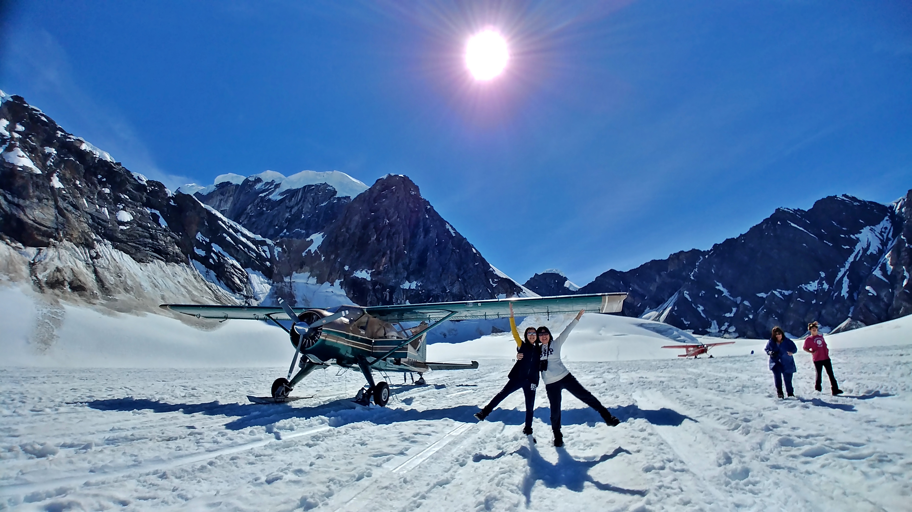
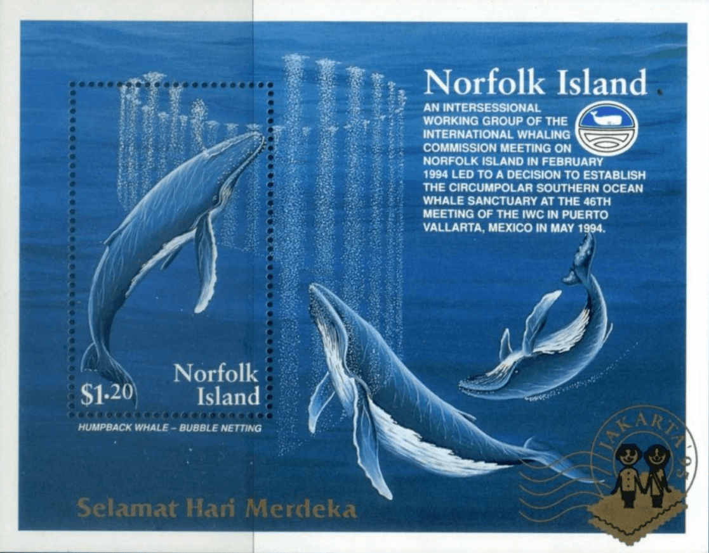

알래스카

| 2018년 07월 29일 |
인천(ICN), 앵커리지(ANC), Wildlife Conservation Center, 포터마쉬 |
| 07월 30일 | 수어드, 키나이 피요르드 투어, 해달, 혹등고래, 바다사자, 퍼핀 등, 홀게이트빙하 |
| 07월 31일 | 빅레이크, 탈키트나, 데날리산 경비행기 투어, 루스빙하 랜딩, 탈키트나 레이크 하이킹 |
| 08월 01일 | 와실라 개썰매본부, Wild Berry Product, 바이런 빙하 하이킹, 알리예스카 |
| 08월 02일 | ANC, ICN |
느낀 점, 배운 것
- 북위 66.33도 이상의 북극권을 못 가서 아쉽다.- 무스를 못 봐서 아쉽다. 탈키트나 북쪽으로 가야 볼 수 있는 것 같다.
- 탈키트나 알래스칸 로지의 트레일 코스를 가보고 싶다. 무스를 볼 수 있을지도...
- 위티어 빙하 투어는 앵커리지에서 가깝지만 고래를 볼 가능성은 희박하다.
- 혹등고래를 보려면 수어드 키나이피요르드 투어를 해야 한다.
- 키나이피요르드 투어 시, 배의 뒤 편에 있으면 멀미가 덜하다. 배 앞쪽은 8시간 내내 과격한 디스코팡팡을 타는 것과 같다.
- 곰이 연어 잡는 것을 보려면 카트마이 국립공원으로 가야 한다. 가격이 좀 비싸다. - 데날리 경비행기 투어는 반드시 설원 착륙을 해야 한다.
- 알래스카는 넓다. 짧은 일정으로 소화할 수 없는 곳이다. 선택과 집중이 필요 하다.
- 숙박 및 여행 계획을 잘 세워야 한다. 예를 들며, 알리예스카-수어드-앵커리지-탈키트나-앵커리지(근교) 순으로 각각 1박하면 동선이 대체로 순방향이다.
데날리 국립공원 경비행기 투어
데날리산의 높이는 6,190m이며, 북아메리카 대륙에서 가장 높은 산이다. 본래 알래스카 원주민들은 이 산을 '가장 높은 곳'이라는 뜻의 '데날리 산'으로 불렀다. 그러다 1896년 공화당 대선 후보였던 윌리엄 매킨리(William McKinley, 후에 제 25대 대통령이 됨)가 자신의 이름을 따 매킨리(McKinley) 산이라 불렀고, 1917년 이 이름이 공식화되었다. 이후 원래의 이름을 되찾기 위한 지역주민의 움직임이 계속되었고, 2015년 8월 데날리 산으로 공식 개칭되었다.산정은 북쪽의 봉우리와 남쪽의 봉우리로 되어 있으며, 북봉은 1910년에, 남봉은 1913년에 각각 첫 등정에 성공했다. 한국 산악인 고상돈(高相敦)님이 1979년 등정에 성공하였으나 하산길에 추락사하였고, 탈키트나에 묘소가 있다.
루스빙하 설원 착륙 은 알래스카 여행 최고의 경험이다. 햇볕 내리쬐는 푸른 하늘 아래 순백의 빙하설원, 한 여름의 눈싸움, 비닐 돛자리를 이용한 눈썰매는 평생 잊지 못할 추억이 되기에 충분한 알래스카의 선물이다.

혹등고래
고래목 > 긴수염고래과. 몸길이 11~16m, 무게 30~40t, 수명 최대 60년, 호흡수 1시간에 10~20회.하와이에서 월동한 혹등고래는 4천 킬로미터를 여행해서 알래스카 바다로 찾아온다. 크릴새우, 청어, 연어, ..., 풍요로운 북방 바다. 혹등고래는 여름철 알래스카에서 지방을 축적하고 번식과 출산이 기다리는 따뜻한 하와이 바다로 다시 돌아간다. 그러나 월동 하는 그곳에는 고래가 먹을 만한 것이 없다. 혹등고래가 알래스카 바다에서 보내는 여름 몇 개월은 소중한 포식의 계절인 것이다. – 호시노 미치오, 『알래스카, 바람같은 이야기』
혹등고래 버블넷 피딩
버블넷 피딩은 혹등고래의 신비로운 사냥 기술이다. 청어 떼를 발견한 혹등고래는 그 아래를 나선형으로 선회하면서 거품을 내뿜는다. 거품은 수면을 향해 원기둥형 벽처럼 올라가게 되고, 청어는 바닷속의 가짜 벽 속에 갇혀버린다. 거품을 두려워하는 청어 떼는 그 벽을 감히 돌파할 수 없기 때문이다. 위를 향해 도망치는 청어는 수면 아래에서 커다란 덩어리가 되고, 그곳으로 혹등고래가 아가리를 벌리고 바닷속에서 공중으로 단숨에 솟구쳐 오르는 것이다. – 호시노 미치오, 『알래스카, 바람같은 이야기』
흰머리수리(Bald Eagle)
흰머리수리는 지혜와 용맹의 상징으로 1782년 미국 의회에서 ‘미국의 국조(國鳥)’로 지정되었으며,
이후 대통령의 인장을 포함한 대부분의 공식 문장 및 미국의 각 공공기관에서 상징물로 사용되고 있다.
Bald Eagle을 잘못 번역하여 대머리 독수리라고 부르기도 하지만 이는 명백히 틀렸다. Bald는 현대 영어에서 '대머리'를 의미하지만, 옛날 영어에서는 '하얀 부분(White Patch)'을 가리키는 말이었다. Bald Eagle에 쓰인 Bald도 '대머리'가 아니라 '흰색'을 의미하는 것이다.

독수리(禿대머리 독--)
국어사전의 두가지 뜻
1.대머리수리 종. 영어로 '이글(Eagle)'이 아니라
'벌처(Vulture)'이다. 독수리에서 독(秃)은 한자로 대머리를 의미하기 때문에,
'대머리 독수리'라고 하면 '대머리 대머리수리'가 되므로 대머리 독수리는 잘못된 표현이다.
머리가 벗겨진 이유는 동물의 사체를 먹는 습성과 관련이 있다. 머리에 깃털이 많으면,
부드러운 내장을 먼저 먹으려고 동물의 사체에 머리를 집어넣는 과정에서 이물질이 묻어
질병에 노출될 수 있기 때문이다. 이외에도 체열을 내보내는 기능도 한다.
2.수릿과의 맹금류인 대머리수리, 참수리, 검수리 따위를 일상적으로 이르는 말.
우리나라에서 독수리라고 하면 머리에 털이 있는 검수리를 먼저 떠올리며, 2번 의미로 많이 사용한다. 혼동을 없애기 위해 ‘독수리’의 뜻을 ‘대머리수리’ 또는 ‘수릿과의 맹금류’ 둘 중 하나로 정의하는 것이 좋아 보인다.
영단어 Vulture에는 "야비한 행동, 혹은 그런 짓을 하는 사람"이란 뜻도 있다.
스타크래프트 테란 종족의 벌처(Vulture)는 빠르게 움직여 적진을 교란하고 (야비하게) 스파이더 마인을 심는다. 이름과 기능이 매우 잘 어울리는 작명이다.